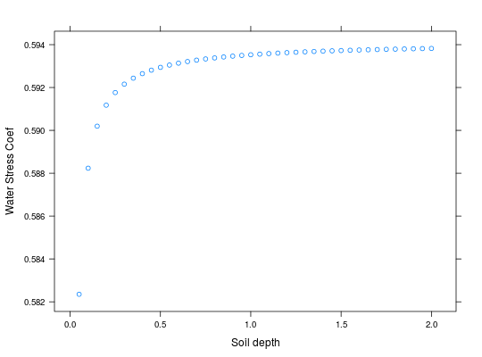
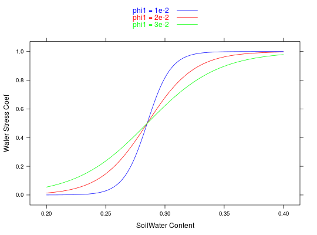

Simple function to illustrate soil water content effect on plant water stress.
Usage
wtrstr(precipt, evapo, cws, soildepth, fieldc, wiltp, phi1 = 0.01, phi2 = 10, wsFun = c("linear", "logistic", "exp", "none"))
Arguments
- precipt
- Precipitation (mm).
- evapo
- Evaporation (Mg H2O ha-1 hr-1).
- cws
- current water content (fraction).
- soildepth
- Soil depth, typically 1m.
- fieldc
- Field capacity of the soil (fraction).
- wiltp
- Wilting point of the soil (fraction).
- phi1
- coefficient which controls the spread of the logistic function.
- phi2
- coefficient which controls the effect on leaf area expansion.
- wsFun
- option to control which method is used for the water stress function.
Value
-
A list with components:
Description
This is a very simple function which implements the 'bucket' model for soil water content and it calculates a coefficient of plant water stress.
Details
This is a very simple function and the details can be seen in the code.
Examples
## Looking at the three possible models for the effect of soil moisture on water ## stress aws <- seq(0,0.4,0.001) wats.L <- numeric(length(aws)) # linear wats.Log <- numeric(length(aws)) # logistic wats.exp <- numeric(length(aws)) # exp wats.none <- numeric(length(aws)) # none for(i in 1:length(aws)){ wats.L[i] <- wtrstr(1,1,aws[i],0.5,0.37,0.2,2e-2,4)$wsPhoto wats.Log[i] <- wtrstr(1,1,aws[i],0.5,0.37,0.2,2e-2,4,wsFun='logistic')$wsPhoto wats.exp[i] <- wtrstr(1,1,aws[i],0.5,0.37,0.2,2e-2,4, wsFun='exp')$wsPhoto wats.none[i] <- wtrstr(1,1,aws[i],0.5,0.37,0.2,2e-2,4, wsFun='none')$wsPhoto } xyplot(wats.L + wats.Log + wats.exp + wats.none~ aws, col=c('blue','green','purple','red'), type = 'l', xlab='Soil Water', ylab='Stress Coefficient', key = list(text=list(c('linear','logistic','exp', 'none')), col=c('blue','green','purple','red'), lines = TRUE) )
## This function is sensitive to the soil depth parameter SDepth <- seq(0.05,2,0.05) wats <- numeric(length(SDepth)) for(i in 1:length(SDepth)){ wats[i] <- wtrstr(1,1,0.3,SDepth[i],0.37,0.2,2e-2,3)$wsPhoto } xyplot(wats ~ SDepth, ylab='Water Stress Coef', xlab='Soil depth')
## Difference between the effect on assimilation and leaf expansion rate aws <- seq(0,0.4,0.001) wats.P <- numeric(length(aws)) wats.L <- numeric(length(aws)) for(i in 1:length(aws)){ wats.P[i] <- wtrstr(1,1,aws[i],0.5,0.37,0.2,2e-2,4)$wsPhoto wats.L[i] <- wtrstr(1,1,aws[i],0.5,0.37,0.2,2e-2,4)$wsSpleaf } xyplot(wats.P + wats.L ~ aws, xlab='Soil Water', ylab='Stress Coefficient')
## An example for wsRcoef ## The scale parameter makes a big difference aws <- seq(0.2,0.4,0.001) wats.1 <- wsRcoef(aw=aws,fieldc=0.37,wiltp=0.2,phi1=1e-2,phi2=1, wsFun='logistic')$wsPhoto wats.2 <- wsRcoef(aw=aws,fieldc=0.37,wiltp=0.2,phi1=2e-2,phi2=1, wsFun='logistic')$wsPhoto wats.3 <- wsRcoef(aw=aws,fieldc=0.37,wiltp=0.2,phi1=3e-2,phi2=1, wsFun='logistic')$wsPhoto xyplot(wats.1 + wats.2 + wats.3 ~ aws,type='l', col=c('blue','red','green'), ylab='Water Stress Coef', xlab='SoilWater Content', key=list(text=list(c('phi1 = 1e-2','phi1 = 2e-2','phi1 = 3e-2')), lines=TRUE,col=c('blue','red','green')))


See also
wsRcoef